Clayler SEO - мой рабочий инструмент: программа не продаётся и не выложена в открытый доступ. Я пишу её сам и отлаживаю на многих настоящих сайтах. Ниже показано, что она умеет. Снимки сделаны при проверке публичного сайта hightime.agency 28.10.2026: это пример того, как выглядит отчёт программы, а не оценка работы компании.
Как идёт проверка
Программа обходит сайт по ссылкам и по карте сайта (sitemap), как поисковый робот. Можно проверить весь сайт, только один раздел или свой список адресов. Сайт, собранный на JavaScript, программа может открыть в браузере и сравнить, что видит поисковик до работы скриптов и что видит человек после.
Вместе с вашим сайтом можно проверить до пяти конкурентов: в конце получится таблица «ваш сайт против конкурентов».
С чего начать
Наверху отчёта стоит «здоровье» сайта: какая доля страниц без проблем, отдельно по технике и по контенту. Это внутренняя оценка аудита, а не показатель Яндекса или Google. Сразу под ней короткий список «С чего начать»: какие пять исправлений дадут больше всего пользы.
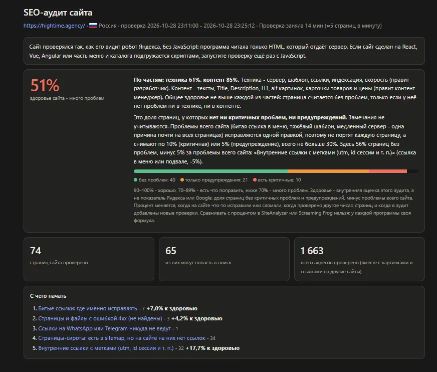
Каждая проблема объяснена
Проблемы разложены по важности. Красные - критичные, их исправлять первыми. Оранжевые ухудшают сайт, но не ломают его. Жёлтые - замечания для сведения.
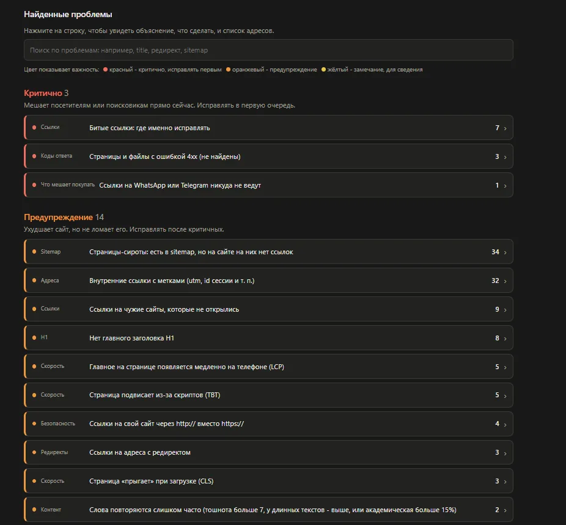
У каждой проблемы написано, что она значит и что сделать, и есть список страниц, где она найдена. Где можно, программа сразу предлагает готовое исправление. Например, для страницы без главного заголовка H1 - текст заголовка, взятый из самой страницы.
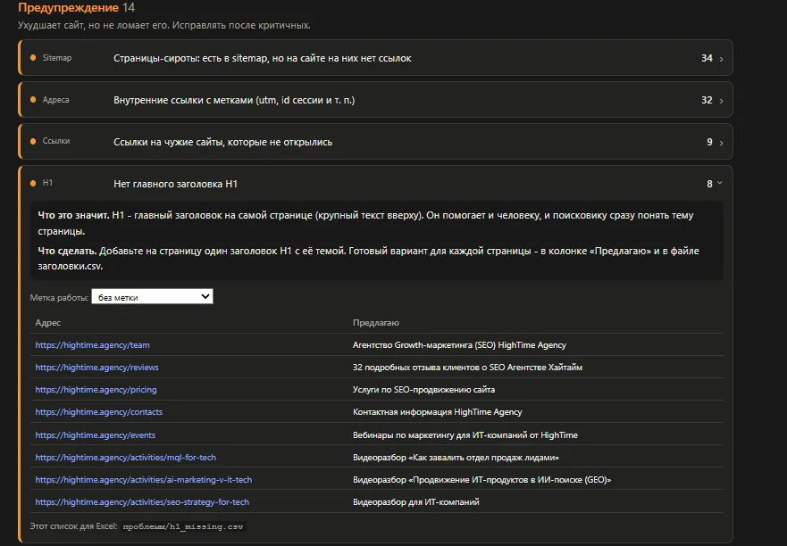
Где именно ошибка
Не нужно искать битую ссылку по всему сайту. Программа открывает копию страницы и обводит проблемное место красной рамкой. Рядом написано, куда ведёт ссылка и какую ошибку она отдаёт.
Кнопка «Что в коде» показывает служебные поля страницы так, как их получает поисковик: title, описание, canonical, заголовок H1 и другие. Поле с проблемой тоже обведено.
В отчёте есть и подборка снимков страниц, где ошибку видно глазами: лишние заголовки, мелкие кнопки на телефоне.
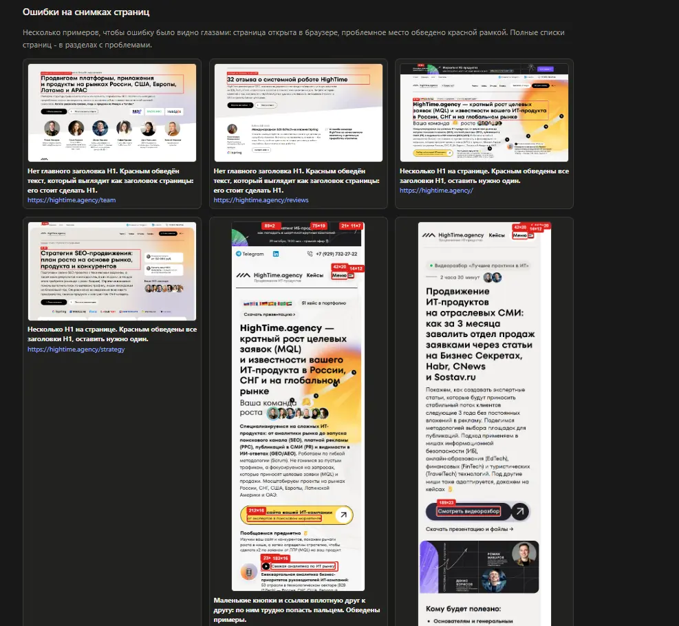
Как сайт выглядит на телефоне
Программа открывает страницы в браузере шириной с экран телефона, с картинками и шрифтами, и проверяет: не вылезает ли страница за край экрана, нет ли мелкого текста и маленьких кнопок вплотную друг к другу, сколько весит страница и примерно сколько она грузится на медленном мобильном интернете.
Структура и ссылки внутри сайта
Карта по разделам. Каждый раздел сайта - прямоугольник: чем больше в нём страниц, тем он крупнее, а цвет показывает здоровье раздела. Сразу видно, какой раздел требует внимания.
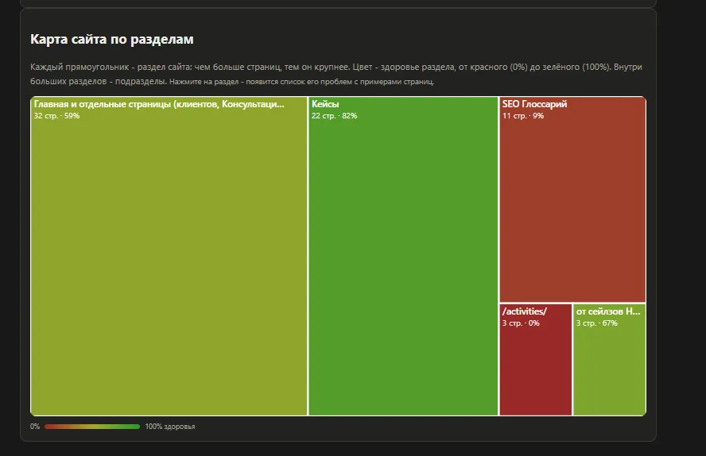
Паутинка ссылок. Схема того, как страницы связаны между собой. Видно страницы, до которых нельзя дойти по ссылкам с главной, и разделы, на которые почти никто не ссылается.
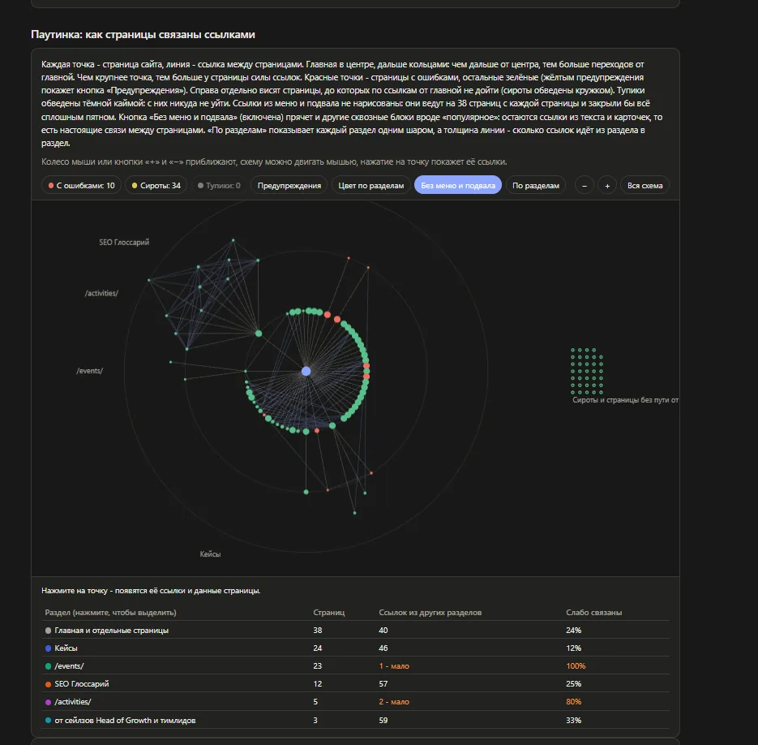
Важность страниц. На какие страницы ведёт больше всего ссылок внутри сайта и какими словами на них ссылаются. Наверху должны быть главные услуги, а не служебные страницы.
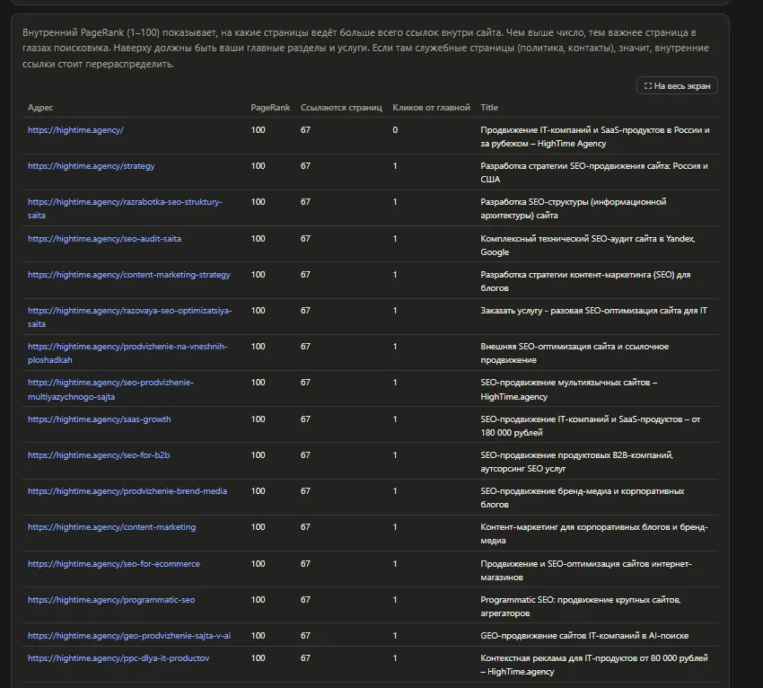
План перелинковки. Каким страницам не хватает ссылок, с каких страниц их поставить и каким текстом.
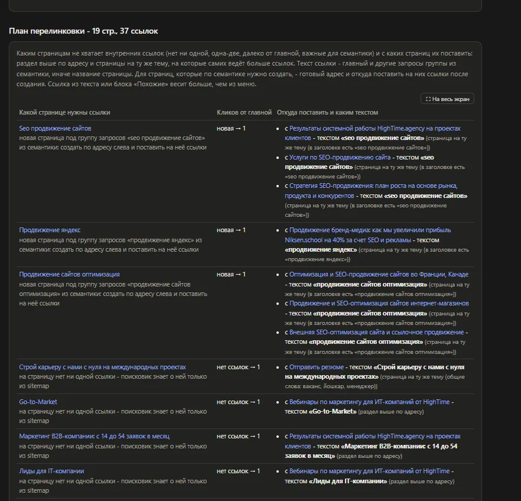
Запросы и страницы
Программа собирает запросы, которые люди ищут по теме сайта, и раскладывает их по группам. Для каждой группы видно спрос, какая страница на сайте за неё отвечает и что с ней сделать: доработать заголовок, добавить запрос в описание или создать новую страницу.
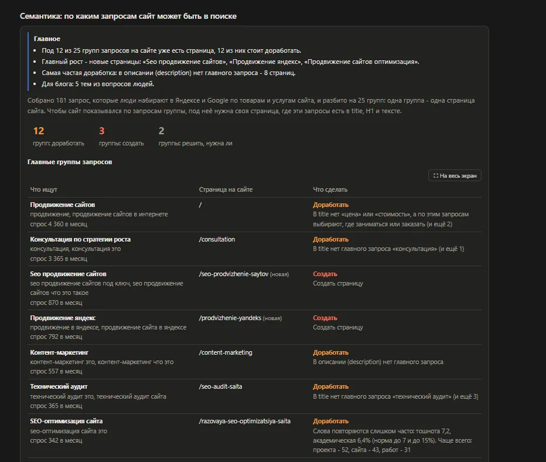
Готовые исправления
Чтобы разработчику не переписывать всё вручную, программа готовит файлы: чистую карту сайта (sitemap.xml), исправленный robots.txt, редиректы для битых адресов и таблицу новых заголовков и описаний страниц.
Готовые title, описания и H1 программа берёт из текста самого сайта и из поисковых запросов. Она ничего не придумывает, но перед загрузкой на сайт их всё равно стоит прочитать глазами.
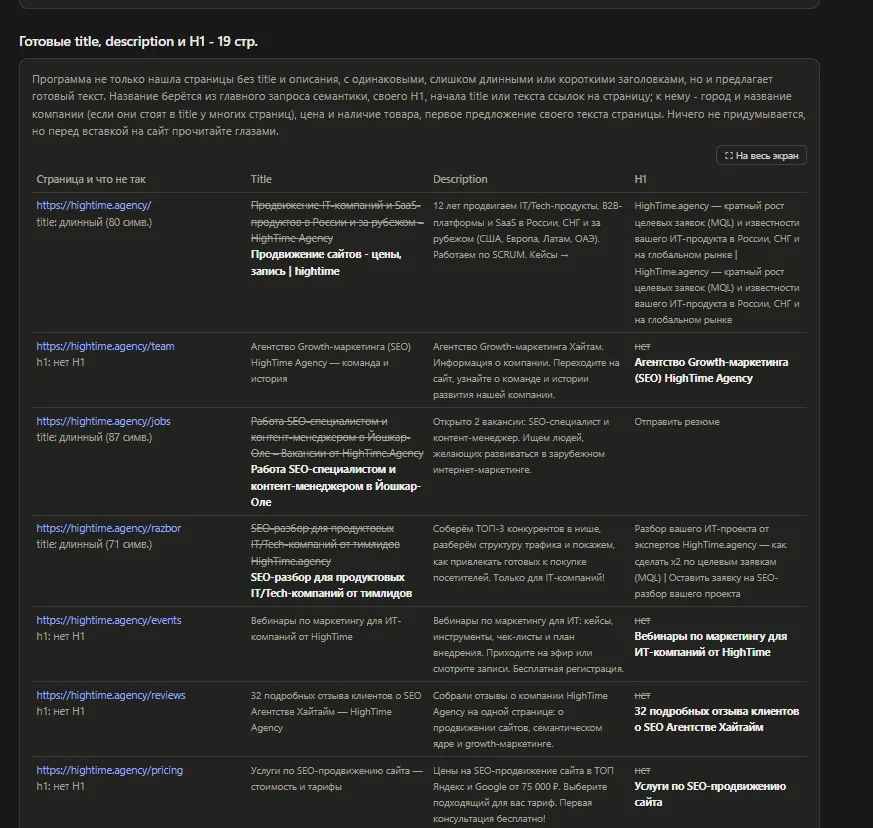
План работ
В конце аудита - план: что исправить срочно, что важно, что по желанию, кто это делает и сколько примерно займёт. Это предварительная оценка, а не цена: точный срок называет исполнитель, когда посмотрит сайт изнутри.
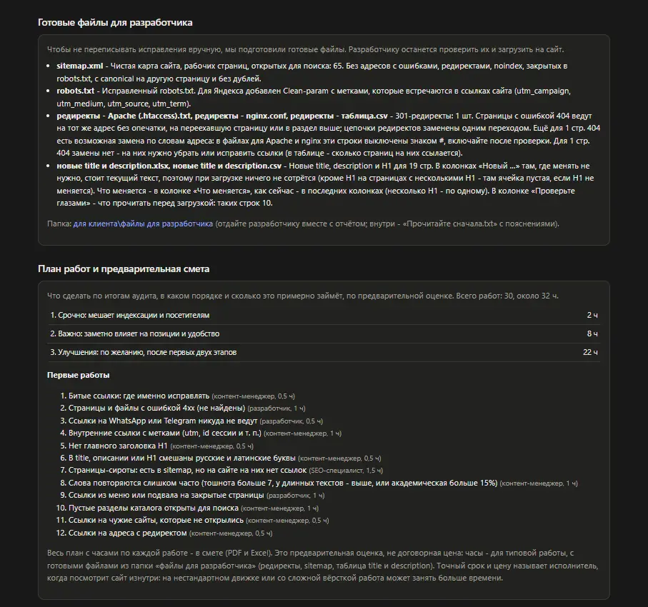
Что вы получаете
- Отчёт в браузере. Всё, что описано выше: проблемы с объяснениями, снимки, структура сайта.
- PDF для руководителя. Коротко и по важности.
- Таблицу Excel для разработчика. Все страницы и все проблемы.
- Папку готовых файлов. Карта сайта, robots.txt, редиректы, новые заголовки.
- Сравнение с прошлым разом. При повторной проверке: что исправили и что сломалось.
Почему результатам можно доверять
Программа находит подозрительные места, а решение принимаю я: каждую спорную находку открываю на сайте и проверяю руками. Как это выглядит на практике, видно в кейсах: GasProfService, Talisman Online и Эксперт 719+.
Внутри нет нейросетей. Каждый вывод программа делает по понятному правилу, поэтому его можно проверить: она не придумывает ошибок, которых нет.
Чего я не обещаю
Аудит показывает, что мешает сайту. Он не гарантирует позиций и роста трафика: результат зависит от того, что и как исправят.